7 Single cell methylation
7.0.1 initialize definitions
## cgdb object
## 21,342,746 CpGs X 24,179 cells## --- root (@db_root): /net/mraid14/export/tgdata/users/aviezerl/proj/ebdnmt/Dnmt3ab_EB/methylation/data/cgdb## Joining, by = "cell_id"7.1 Generate cell-cycle ordering
Extract coverage in early and late regions per single cell:
tor_covs <- db_plp_f %>%
mutate_cpgs(tor_grp = case_when(tor <= 0 ~ "late", tor >= 0 ~ "early")) %>%
filter_cpgs(chrom != "chrX", chrom != "chrY", !is.na(tor_grp)) %>%
group_by_cpgs(tor_grp) %>%
summarise() %>%
select(-meth) %>%
spread(tor_grp, cov) %cache_df%
here("output/tor_cov_per_cell.tsv") %>%
as_tibble()Extract the same stratified by CpG content:
tor_cgc_meth <- db_f %>%
mutate_cpgs(cg_cont = cut(cg500, c(0,0.02,0.08,0.2)), tor_grp = case_when(tor <= 0 ~ "late", tor >= 0 ~ "early")) %>%
filter_cpgs(chrom != "chrX", chrom != "chrY", !is.na(tor_grp), !is.na(cg_cont)) %>%
group_by_cpgs(cg_cont, tor_grp) %>%
summarise() %>%
mutate(avg = meth / cov) %>%
pivot_wider(c(cell_id, cg_cont), names_from=tor_grp, values_from=cov:avg) %cache_df%
here("output/tor_meth_cgc_per_cell.tsv") %>%
as_tibble()Extract the same stratified by CpG content and AB score:
tor_ab_meth <- calc_cgc_ab_score_sc(db_f, ab_score) %>%
rename(ab_score = score) %cache_df%
here("output/tor_meth_cgc_ab_score_per_cell.tsv") %>%
as_tibble()tor_a_meth <- calc_cgc_ab_score_sc(db_f, a_score) %>%
rename(a_score = score) %cache_df%
here("output/tor_meth_cgc_a_score_per_cell.tsv") %>%
as_tibble()tor_b_meth <- calc_cgc_ab_score_sc(db_f, b_score) %>%
rename(b_score = score) %cache_df%
here("output/tor_meth_cgc_b_score_per_cell.tsv") %>%
as_tibble()Generate for each cell the ratio between early and late coverage (early_late_cov) and the difference in methylation between early and late regions (meth_late_early_diff).
Requirments: - CpG content <= 2% - Early coverage > 2000 and Late coverage > 2000 - Total coverage of early + late higher than 20000
min_cov <- 2e3
min_cov_both <- 2e4
df_cell_cycle_annot <- tor_cgc_meth %>%
filter(cg_cont == "(0,0.02]") %>%
select(-cg_cont) %>%
filter(cov_early >= min_cov, cov_late >= min_cov) %>%
left_join(tor_covs %>% filter(early >= min_cov, late >= min_cov)) %>%
left_join(db_f@cells) %>%
filter(!is.na(early)) %>%
mutate(early_late_cov = log2(early / late), meth_late_early_diff = avg_late - avg_early) %>%
filter(early + late >= min_cov_both) %cache_df%
here("output/sc_cell_cycle_annot.tsv") %>%
as_tibble()7.1.1 In-vivo
Merge with germ layer annotations (FACS):
invivo_sort <- fread(here("data/cells_germ_layer_invivo.tsv")) %>% as_tibble()
df_cell_cycle_invivo <- df_cell_cycle_annot %>%
inner_join(invivo_sort) %>%
filter(germ_layer != "ExE") %>%
select(cell_id, day, germ_layer, avg_late, avg_early, early, late, early_late_cov, early_late_diff = meth_late_early_diff)## Joining, by = "cell_id"Calculate cell-cycle ordering for each day and germ layer using prinicipal curve on the coverage ratio and methylation difference:
calc_cell_cycle_ord function:
- Divides log2(early/late) coverage ratio by its standard deviation.
- Divides late - early methylation difference by its standard deviation.
- Calculates principal curve using:
pc <- princurve::principal_curve(x=mat_norm, start=princurve:::start_circle(mat_norm), stretch=2, smoother = "periodic_lowess")We then:
- define highest early/late coverage ratio as start
- smooth early/late coverage (rolling mean, k=20)
- define the middle of cell cycle as the minimum of smoothed trend
- reorder cells
l_invivo <- df_cell_cycle_invivo %>%
mutate(day = ifelse(day == "e8", "e8.5", day)) %>%
add_count(day, germ_layer) %>% filter(n >= 50, germ_layer %in% c("epi", "ecto", "endo", "meso")) %>%
as.data.frame() %>%
plyr::dlply(c("day", "germ_layer"), function(x) calc_cell_cycle_ord(as_tibble(x)))## Joining, by = "cell_id"
## Joining, by = "cell_id"
## Joining, by = "cell_id"
## Joining, by = "cell_id"
## Joining, by = "cell_id"
## Joining, by = "cell_id"
## Joining, by = "cell_id"Anchor ordering for in-vivo samples:
df_ord_invivo <- l_invivo %>%
map_dfr(~ .$df) %>%
as_tibble() %>%
unite("type", day:germ_layer, remove=FALSE) %>%
group_by(day, germ_layer) %>%
arrange(day, germ_layer, desc(early_late_cov) ) %>%
mutate(
new_ord = ord - ord[1] + 1,
new_ord = ifelse(new_ord >= 0, new_ord, max(new_ord) + abs(min(new_ord)) - abs(new_ord)),
ord1 = new_ord / max(new_ord)
) %>%
mutate(
trend = zoo::rollmean(early_late_cov[order(ord1)], 20, na.pad = TRUE),
i_mid = zoo::rollmean(ord1[order(ord1)],20)[which.min(trend)],
ord2 = i_mid - ord1,
ord2 = ord2 - floor(ord2)
) %cache_df% here("output/cell_cycle/invivo.tsv")Add ordering to CpG content and ab-score objects:
df_ord_cgc_invivo <- tor_cgc_meth %>%
inner_join(df_ord_invivo %>% select(cell_id, day, germ_layer, ord2, early_late_cov)) %fcache_df%
here("output/cell_cycle/invivo_cgc.tsv")## Joining, by = "cell_id"df_ord_ab_score_invivo <- tor_ab_meth %>%
inner_join(df_ord_invivo %>% select(cell_id, day, germ_layer, ord2, early_late_cov)) %fcache_df%
here("output/cell_cycle/invivo_ab_score.tsv")## Joining, by = "cell_id"7.1.2 EB
## # A tibble: 7 x 3
## day experiment n
## 1 d5 experiment3 659
## 2 d5 experiment4 1672
## 3 d5 experiment6 1021
## 4 d5 experiment8 362
## 5 d6 experiment2 746
## 6 d6 experiment3 645
## # ... with 1 more rowsExperiments 5,6 and 8 had a strong batch effect and therefore they are processed separatley below.
We remove cells with extremly low methylation (less than 0.7)
df_cell_cycle_eb <- df_cell_cycle_annot %>%
filter(line != "mouse", day %in% c("d5", "d6"), !(experiment %in% paste0("experiment", c(5,6,8))), avg_early >= 0.7, avg_late >= 0.7) %>%
select(cell_id, day, line, sort, experiment, avg_late, avg_early, early, late, early_late_cov, early_late_diff = meth_late_early_diff)l_ebs <- df_cell_cycle_eb %>% add_count(day, line) %>% filter(n >= 50) %>% as.data.frame() %>% plyr::dlply(c("day", "line"), function(x) calc_cell_cycle_ord(as_tibble(x)))## Joining, by = "cell_id"
## Joining, by = "cell_id"
## Joining, by = "cell_id"
## Joining, by = "cell_id"df_ord_ebs <- l_ebs %>%
map_dfr(~ .$df) %>%
as_tibble() %>%
unite("type", day:line, remove=FALSE) %>%
group_by(day, line) %>%
arrange(day, line, desc(early_late_cov) ) %>%
mutate(
new_ord = ord - ord[1] + 1,
new_ord = ifelse(new_ord >= 0, new_ord, max(new_ord) + abs(min(new_ord)) - abs(new_ord)),
ord1 = new_ord / max(new_ord)
) %>%
mutate(
trend = zoo::rollmean(early_late_cov[order(ord1)], 20, na.pad = TRUE),
i_mid = zoo::rollmean(ord1[order(ord1)],20)[which.min(trend)],
ord2 = i_mid - ord1,
ord2 = ord2 - floor(ord2)
) %>%
mutate(type = factor(type, levels = c("d6_wt", "d5_wt", "d5_ko3a", "d5_ko3b", "d6_ko3a", "d6_ko3b"))) %fcache_df% here("output/cell_cycle/ebs.tsv")df_ord_cgc_ebs <- tor_cgc_meth %>%
inner_join(df_ord_ebs %>% select(cell_id, day, line, type, ord2, early_late_cov)) ## Joining, by = "cell_id"df_ord_ab_score_ebs <- tor_ab_meth %>%
inner_join(df_ord_ebs %>% select(cell_id, day, line, type, ord2, early_late_cov))## Joining, by = "cell_id"Merge in-vivo and ebs data
df_ord_all <- bind_rows(
df_ord_invivo %>% filter(day == "e7.5") %>% mutate(line = germ_layer) %>% select(-germ_layer),
df_ord_ebs %>% filter(day %in% c("d5", "d6"))
)Homogenize cell-cycle
options(repr.plot.width = 8, repr.plot.height = 5)
segmented <- df_ord_all %>% plyr::ddply("type", function(x) x %>% get_cc_segments(n_breaks=2, psi=c(0.2, 0.5), labels=c("S-start", "S-mid", "S-end"))) %fcache_df% here("output/cell_cycle/segmented.tsv") %>% as_tibble()## `geom_smooth()` using formula 'y ~ x'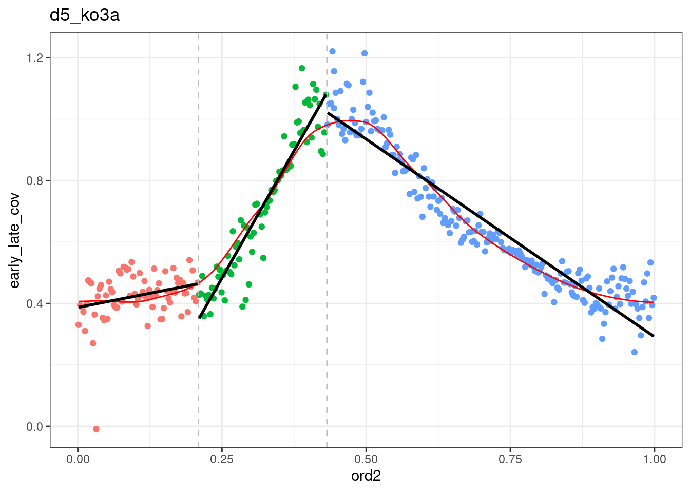
## `geom_smooth()` using formula 'y ~ x'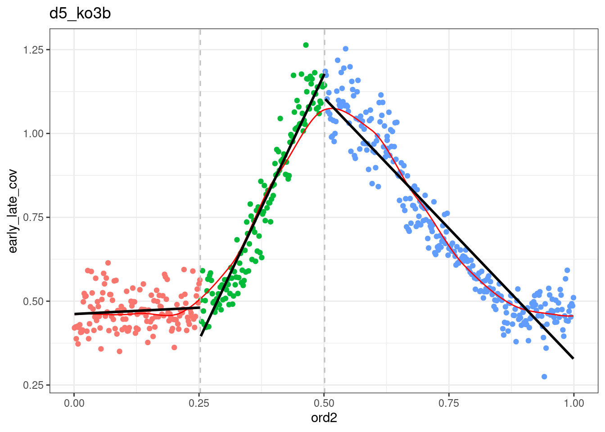
## `geom_smooth()` using formula 'y ~ x'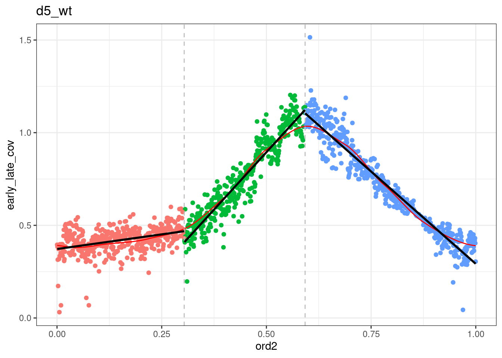
## `geom_smooth()` using formula 'y ~ x'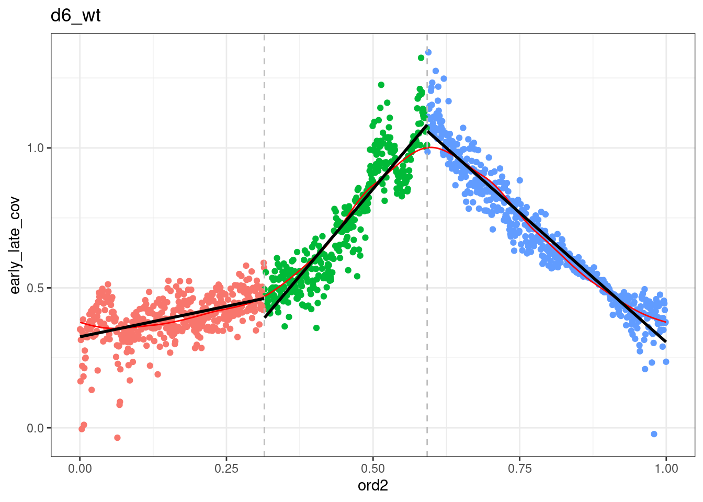
## `geom_smooth()` using formula 'y ~ x'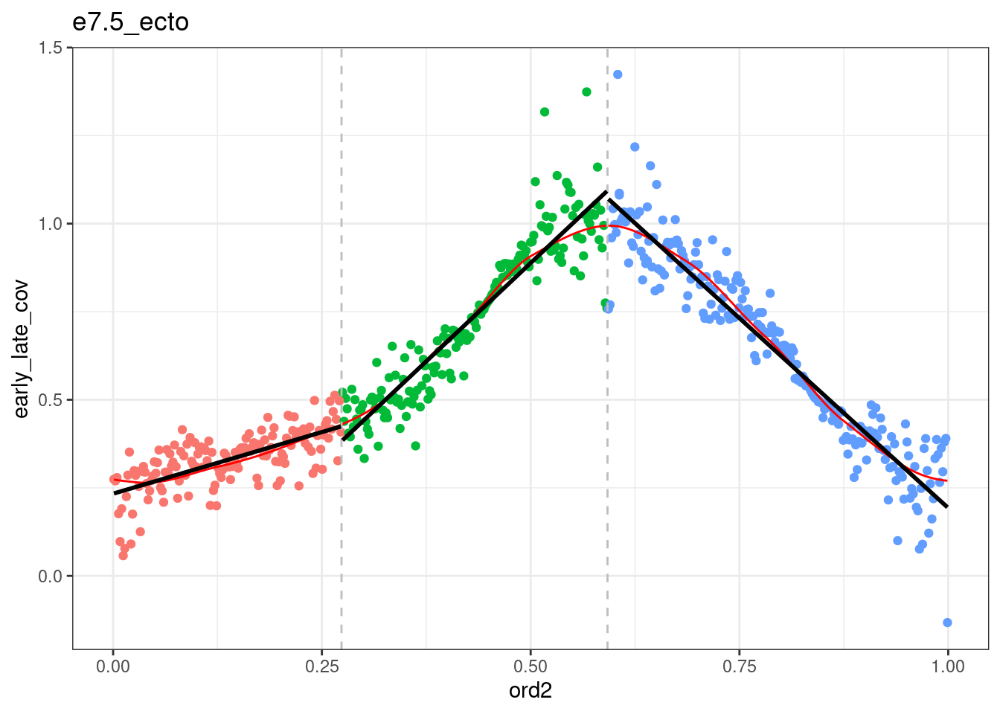
## `geom_smooth()` using formula 'y ~ x'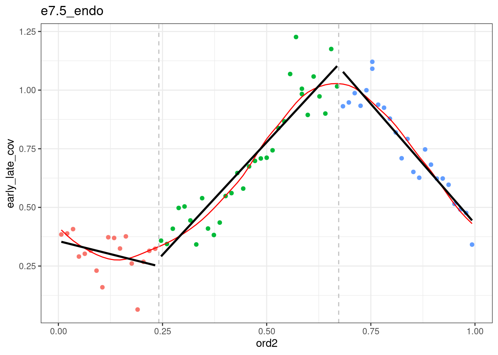
## `geom_smooth()` using formula 'y ~ x'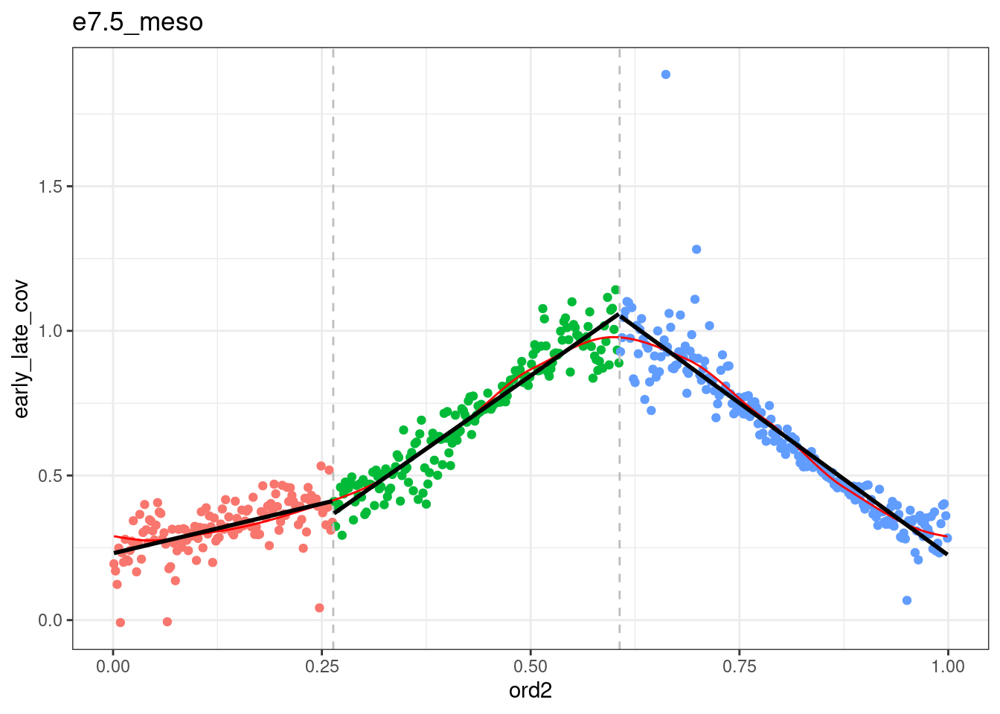
7.2 Plot in-vivo cell-cycle
get_cc_early_late_meth_trend(df_ord_invivo %>% filter(germ_layer == "ecto") %>% rename(avg = avg_early)) %>% skimr::skim(.fitted)| Name | Piped data |
| Number of rows | 595 |
| Number of columns | 19 |
| _______________________ | |
| Column type frequency: | |
| numeric | 1 |
| ________________________ | |
| Group variables | None |
Variable type: numeric
| skim_variable | n_missing | complete_rate | mean | sd | p0 | p25 | p50 | p75 | p100 | hist |
|---|---|---|---|---|---|---|---|---|---|---|
| .fitted | 0 | 1 | 0.88 | 0.02 | 0.85 | 0.86 | 0.89 | 0.91 | 0.91 | ▅▃▃▃▇ |
get_cc_early_late_meth_trend(df_ord_invivo %>% filter(germ_layer == "ecto") %>% rename(avg = avg_late)) %>% skimr::skim(.fitted)| Name | Piped data |
| Number of rows | 595 |
| Number of columns | 19 |
| _______________________ | |
| Column type frequency: | |
| numeric | 1 |
| ________________________ | |
| Group variables | None |
Variable type: numeric
| skim_variable | n_missing | complete_rate | mean | sd | p0 | p25 | p50 | p75 | p100 | hist |
|---|---|---|---|---|---|---|---|---|---|---|
| .fitted | 0 | 1 | 0.92 | 0.02 | 0.88 | 0.9 | 0.92 | 0.93 | 0.93 | ▃▂▂▂▇ |
7.2.1 Figure 6B
options(repr.plot.width = 10, repr.plot.height = 7)
p_el_invivo_7.5 <- map(c("ecto", "meso", "endo"), ~ df_ord_invivo %>%
filter(germ_layer == .x) %>%
plot_cc_early_late_meth(point_size=0.1, add_trend_lines = TRUE, y_lim = c(0.7, 1), plot_phase_lines = FALSE, trend_ylim = c(0,1.2)))
p_el_invivo_7.5## [[1]]## `geom_smooth()` using formula 'y ~ x'## Warning: Removed 63 rows containing non-finite values (stat_smooth).## Warning: Removed 63 rows containing missing values (geom_point).## `geom_smooth()` using formula 'y ~ x'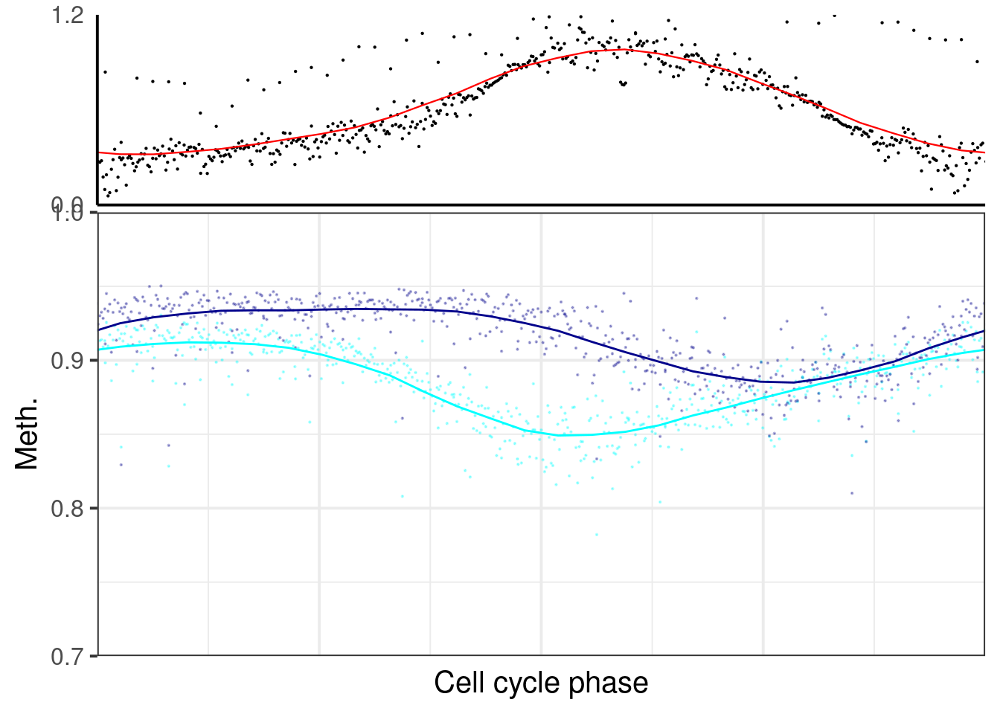
##
## [[2]]## `geom_smooth()` using formula 'y ~ x'## Warning: Removed 588 rows containing non-finite values (stat_smooth).## Warning: Removed 588 rows containing missing values (geom_point).## `geom_smooth()` using formula 'y ~ x'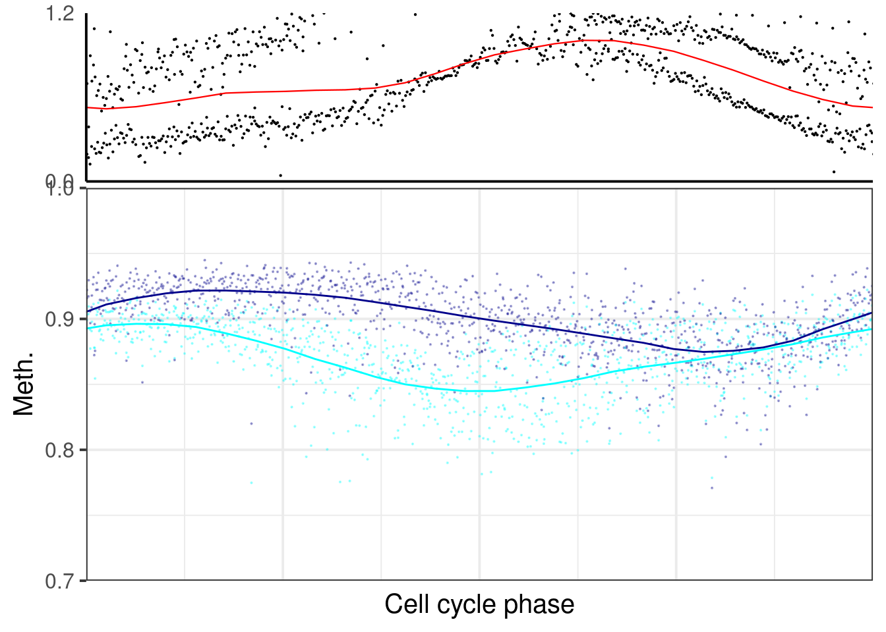
##
## [[3]]## `geom_smooth()` using formula 'y ~ x'## Warning: Removed 3 rows containing non-finite values (stat_smooth).## Warning: Removed 3 rows containing missing values (geom_point).## `geom_smooth()` using formula 'y ~ x'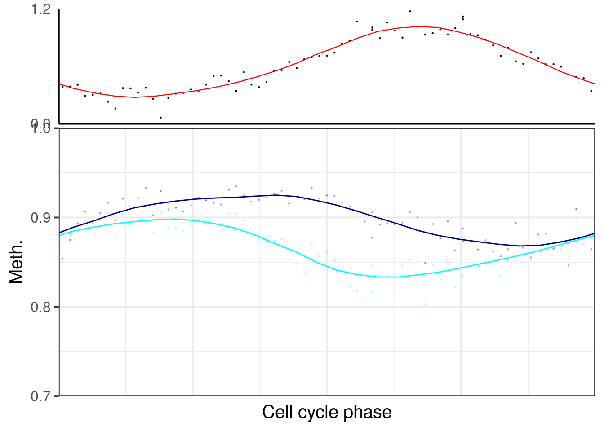
7.2.2 Figure 6A
options(repr.plot.width = 10, repr.plot.height = 15)
p_el_invivo_7.5_circle <- df_ord_invivo %>%
filter(day == "e7.5") %>%
mutate(germ_layer = factor(germ_layer, levels=c("ecto", "meso", "endo"))) %>%
plot_cc_circle(point_size=0.4) +
facet_grid(germ_layer~.) +
scale_x_continuous(breaks=c(-0.1, 0.15)) +
coord_cartesian(ylim = c(-0.15, 1.9), xlim=c(-0.12, 0.14))
p_el_invivo_7.5_circle + theme_bw() + theme(aspect.ratio=1) 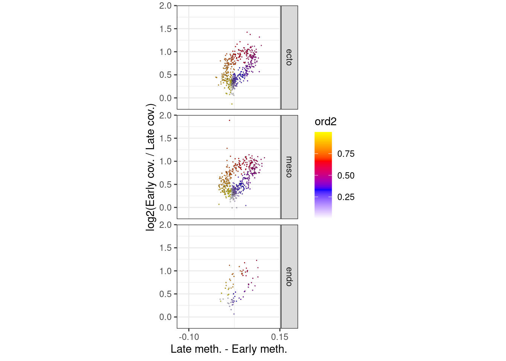
options(repr.plot.width = 8, repr.plot.height = 8)
germ_layer_colors <- c("ecto" = "#5A9E30", "meso" = "#BE89B7", "endo" = "#ED4F93")
df <- df_ord_ab_score_invivo %>%
filter(cg_cont == '(0,0.02]') %>%
group_by(germ_layer) %>%
do({calc_cc_early_late_ab_diff(., low = "(-1.46,-0.734]", high = "(0.281,1.63]")}) %>%
ungroup() %>%
mutate(germ_layer = factor(germ_layer, levels = names(germ_layer_colors))) %>%
filter(!is.na(germ_layer))
df <- df %>%
pivot_longer(names_sep="_", names_prefix="avg_", cols=starts_with("avg"), names_to=c("tor", "ab_score", "dummy"), values_to="avg") %>%
mutate(ab_score = forcats::fct_recode(factor(ab_score), "A-phil" = "l", "B-phil" = "h")) %>%
mutate(germ_layer = factor(germ_layer, levels = names(germ_layer_colors))) %>%
filter(!is.na(line)) %>%
filter(cg_cont == "(0,0.02]")## Warning in is.na(line): is.na() applied to non-(list or vector) of type
## 'closure'# show ecto trends on endo and meso
df_ecto <- df %>% filter(germ_layer == "ecto")
df_ecto <- bind_rows(df_ecto %>% mutate(germ_layer = "meso"), df_ecto %>% mutate(germ_layer = "endo")) %>%
mutate(germ_layer = factor(germ_layer, levels = names(germ_layer_colors)))df_max_repli <- df %>%
group_by(germ_layer, tor) %>%
filter(ord2 <= 2, ord2 >= 1) %>%
summarise(s = ord2[which.max(early_late_cov)])
df_max_repli## # A tibble: 6 x 3
## # groups: germ_layer
## germ_layer tor s
## 1 ecto early 1.651786
## 2 ecto late 1.651786
## 3 meso early 1.661822
## 4 meso late 1.661822
## 5 endo early 1.570423
## 6 endo late 1.5704237.2.3 Figure 6C
p_ab_trend_invivo <- df %>%
mutate(germ_layer = factor(germ_layer, levels = names(germ_layer_colors))) %>%
ggplot(aes(x=ord2, y=avg, color=ab_score)) +
geom_smooth(method="loess", span=0.2, se=FALSE, size=0.5) +
geom_smooth(data = df_ecto %>% filter(ab_score == "A-phil"), method="loess", span=0.2, se=FALSE, size=0.5, linetype="dashed", color="gray") +
geom_smooth(data = df_ecto %>% filter(ab_score == "B-phil"), method="loess", span=0.2, se=FALSE, size=0.5, linetype="dotted", color="gray") +
coord_cartesian(xlim=c(1,2), expand=0) +
ggsci::scale_color_lancet(name = "CpGs") +
geom_vline(aes(xintercept = s), data = df_max_repli, color = "darkblue", linetype = "dashed") +
facet_grid(germ_layer~tor) +
xlab("") +
ylab("Methylation") +
theme(
axis.text.x = element_blank(),
axis.ticks.x = element_blank()
)
p_ab_trend_invivo## `geom_smooth()` using formula 'y ~ x'
## `geom_smooth()` using formula 'y ~ x'
## `geom_smooth()` using formula 'y ~ x'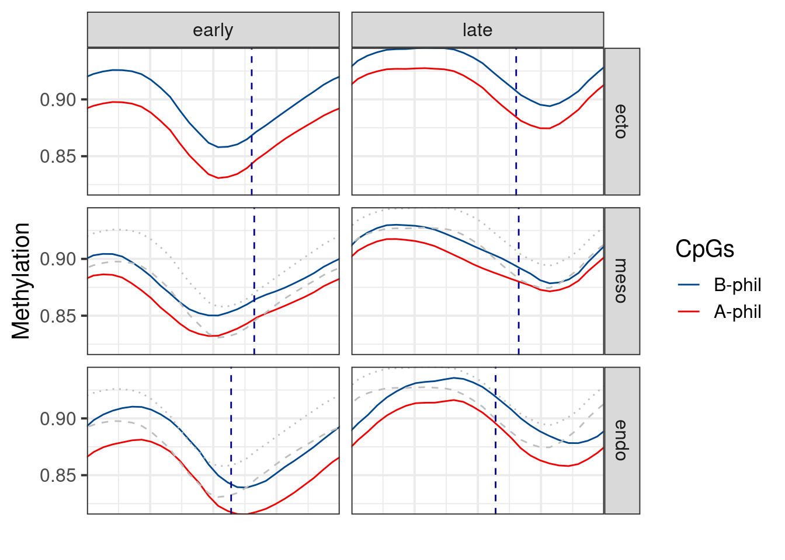
7.2.4 Extended Data Figure 9G
germ_layer_colors <- c("ecto" = "#5A9E30", "meso" = "#BE89B7", "endo" = "#ED4F93")
df_diff <- df %>% distinct(cell_id, cg_cont, day, germ_layer, ord2, tor, ab_score, avg) %>% spread(ab_score, avg) %>% mutate(diff = `B-phil` - `A-phil`) %>% filter(ord2 >= 1, ord2 <= 2) %>% mutate(ord_grp = cut(ord2, 3, include.lowest=TRUE, labels=c("S-start", "S-mid", "S-end")))
p_ab_diff <- df_diff %>% ggplot(aes(x=ord_grp, y=diff, fill=germ_layer)) + geom_boxplot(outlier.shape=NA) + facet_grid(.~tor) + scale_fill_manual(name="", values=germ_layer_colors) + ylab("B-phil - A-phil") + xlab("") + ggforce::geom_sina(size=0.01, alpha=0.1) + vertical_labs() + coord_cartesian(ylim = c(-0.04, 0.06))
p_ab_diff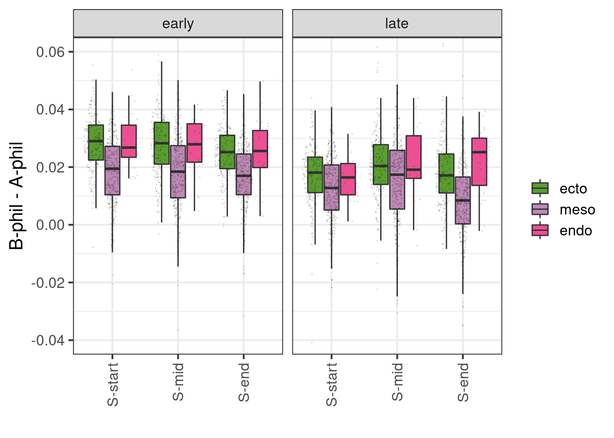
## # A tibble: 18 x 4
## tor ord_grp germ_layer n
## 1 early S-start ecto 198
## 2 early S-mid ecto 199
## 3 early S-end ecto 198
## 4 late S-start ecto 198
## 5 late S-mid ecto 199
## 6 late S-end ecto 198
## # ... with 12 more rowsdf_diff %>% group_by(tor, ord_grp) %>% do({broom::tidy(ks.test(.$diff[.$germ_layer == "ecto"], .$diff[.$germ_layer == "meso"]))}) %>% mutate(type = "ecto vs meso") %>% mutate(stars = case_when(p.value <= 0.0001 ~ "****", p.value <= 0.001 ~ "***", p.value <= 0.01 ~ "**", p.value <= 0.05 ~ "*"))## # A tibble: 6 x 8
## # groups: tor, ord_grp
## tor ord_grp statistic p.value method
## 1 early S-start 0.3774929 4.440892e-16 Two-sample Kolmogorov-Smirnov test
## 2 early S-mid 0.3640675 3.996803e-15 Two-sample Kolmogorov-Smirnov test
## 3 early S-end 0.3658460 3.663736e-15 Two-sample Kolmogorov-Smirnov test
## 4 late S-start 0.2272727 4.183555e-06 Two-sample Kolmogorov-Smirnov test
## 5 late S-mid 0.2105753 2.425034e-05 Two-sample Kolmogorov-Smirnov test
## 6 late S-end 0.3532197 3.708145e-14 Two-sample Kolmogorov-Smirnov test
## alternative type stars
## 1 two-sided ecto vs meso ****
## 2 two-sided ecto vs meso ****
## 3 two-sided ecto vs meso ****
## 4 two-sided ecto vs meso ****
## 5 two-sided ecto vs meso ****
## 6 two-sided ecto vs meso ****df_diff %>% group_by(tor, ord_grp) %>% do({broom::tidy(ks.test(.$diff[.$germ_layer == "endo"], .$diff[.$germ_layer == "meso"]))}) %>% mutate(type = "endo vs meso") %>% mutate(stars = case_when(p.value <= 0.0001 ~ "****", p.value <= 0.001 ~ "***", p.value <= 0.01 ~ "**", p.value <= 0.05 ~ "*"))## # A tibble: 6 x 8
## # groups: tor, ord_grp
## tor ord_grp statistic p.value method
## 1 early S-start 0.4212963 0.00040083315 Two-sample Kolmogorov-Smirnov test
## 2 early S-mid 0.3951311 0.00113293441 Two-sample Kolmogorov-Smirnov test
## 3 early S-end 0.4107955 0.00044987569 Two-sample Kolmogorov-Smirnov test
## 4 late S-start 0.3201567 0.01508288017 Two-sample Kolmogorov-Smirnov test
## 5 late S-mid 0.2827715 0.04390086425 Two-sample Kolmogorov-Smirnov test
## 6 late S-end 0.4809091 0.00001812592 Two-sample Kolmogorov-Smirnov test
## alternative type stars
## 1 two-sided endo vs meso ***
## 2 two-sided endo vs meso **
## 3 two-sided endo vs meso ***
## 4 two-sided endo vs meso *
## 5 two-sided endo vs meso *
## 6 two-sided endo vs meso ****df_diff %>% group_by(tor, ord_grp) %>% do({broom::tidy(ks.test(.$diff[.$germ_layer == "ecto"], .$diff[.$germ_layer == "endo"]))}) %>% mutate(type = "ecto vs endo") %>% mutate(stars = case_when(p.value <= 0.0001 ~ "****", p.value <= 0.001 ~ "***", p.value <= 0.01 ~ "**", p.value <= 0.05 ~ "*"))## # A tibble: 6 x 8
## # groups: tor, ord_grp
## tor ord_grp statistic p.value method
## 1 early S-start 0.10732323 0.94277838 Two-sample Kolmogorov-Smirnov test
## 2 early S-mid 0.08856784 0.98966542 Two-sample Kolmogorov-Smirnov test
## 3 early S-end 0.16767677 0.50363651 Two-sample Kolmogorov-Smirnov test
## 4 late S-start 0.17171717 0.49845073 Two-sample Kolmogorov-Smirnov test
## 5 late S-mid 0.13086265 0.80670065 Two-sample Kolmogorov-Smirnov test
## 6 late S-end 0.29272727 0.03484286 Two-sample Kolmogorov-Smirnov test
## alternative type stars
## 1 two-sided ecto vs endo <NA>
## 2 two-sided ecto vs endo <NA>
## 3 two-sided ecto vs endo <NA>
## 4 two-sided ecto vs endo <NA>
## 5 two-sided ecto vs endo <NA>
## 6 two-sided ecto vs endo *7.3 Plot EBs cell cycle
7.3.1 Figure 6D,E
options(repr.plot.width = 10, repr.plot.height = 7)
p_el_ebs_circle_wt <- df_ord_ebs %>%
filter(line == "wt") %>%
plot_cc_circle(point_size=0.4) +
facet_grid(type~.) +
scale_x_continuous(breaks=c(-0.1, 0.15)) +
coord_cartesian(ylim = c(-0.15, 1.9), xlim=c(-0.12, 0.14))
p_el_ebs_circle_ko <- df_ord_ebs %>%
filter(line != "wt") %>%
plot_cc_circle(point_size=0.4) +
facet_grid(type~.) +
scale_x_continuous(breaks=c(-0.1, 0.15)) +
coord_cartesian(ylim = c(-0.15, 1.9), xlim=c(-0.12, 0.14))
p_el_ebs_circle_wt + theme_bw() + theme(aspect.ratio=1) 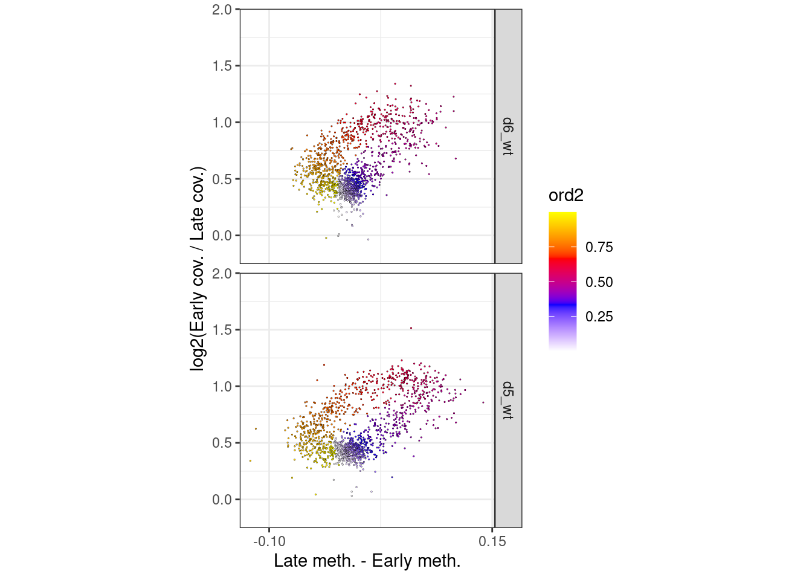
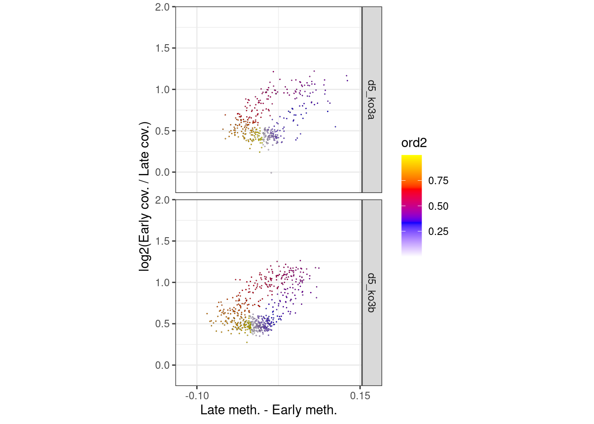
options(repr.plot.width = 10, repr.plot.height = 7)
dff <- df_ord_ebs %>%
filter(line == "wt")
p_el_ebs_wt <- map(c("d6", "d5"), ~ dff %>%
filter(day == .x) %>%
plot_cc_early_late_meth(point_size=0.1, add_trend_lines = TRUE, y_lim = c(0.7, 1), plot_phase_lines = FALSE, trend_ylim = c(0,1.2)))
p_el_ebs_wt## [[1]]## `geom_smooth()` using formula 'y ~ x'## Warning: Removed 39 rows containing non-finite values (stat_smooth).## Warning: Removed 39 rows containing missing values (geom_point).## `geom_smooth()` using formula 'y ~ x'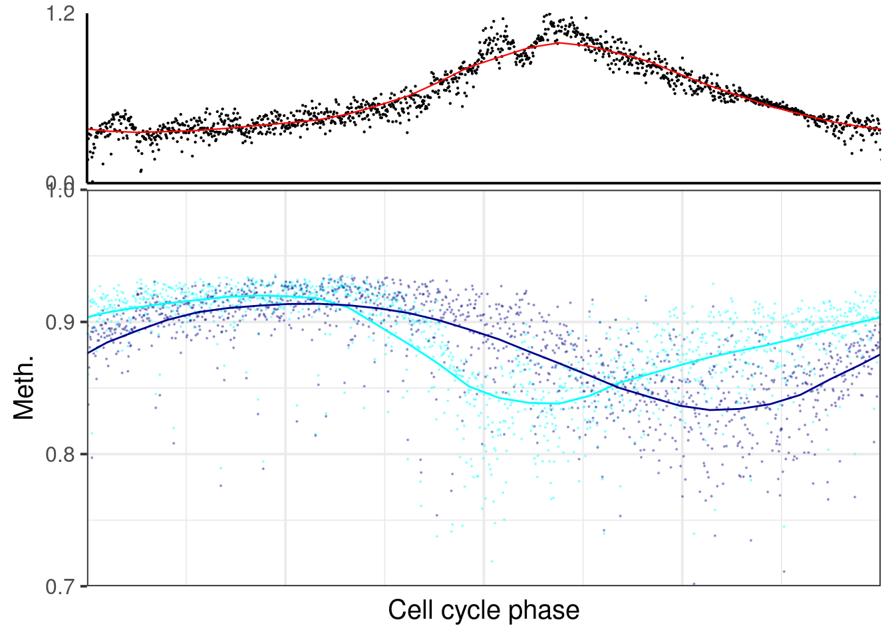
##
## [[2]]## `geom_smooth()` using formula 'y ~ x'## Warning: Removed 12 rows containing non-finite values (stat_smooth).## Warning: Removed 12 rows containing missing values (geom_point).## `geom_smooth()` using formula 'y ~ x'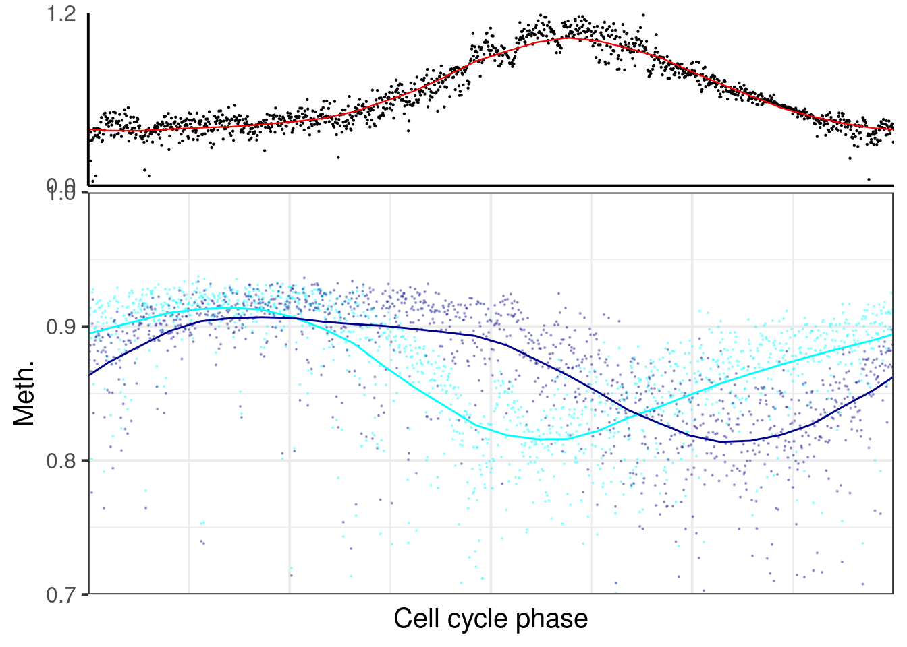
options(repr.plot.width = 10, repr.plot.height = 7)
dff <- df_ord_ebs %>%
filter(line != "wt")
p_el_ebs_ko <- map(c("ko3a", "ko3b"), ~ dff %>%
filter(line == .x) %>%
plot_cc_early_late_meth(point_size=0.1, add_trend_lines = TRUE, y_lim = c(0.7, 1), plot_phase_lines = FALSE, trend_ylim = c(0,1.2)))
p_el_ebs_ko[[1]]## `geom_smooth()` using formula 'y ~ x'## Warning: Removed 9 rows containing non-finite values (stat_smooth).## Warning: Removed 9 rows containing missing values (geom_point).## `geom_smooth()` using formula 'y ~ x'
7.3.1.1 Explanation
ab_score = mA - mB = mA(ko) - mB(ko) = B - A
a_score = mA - mWT = mA(ko) - mWT = B - (A + B) = -A
b_score = mB - mWT = mB(ko) - mWT = A - (A + B) = -B(m prefix indicates methylation. Without prefix - activity.)
Therefore:
- Low
ab_score=> A > B, highab_score=> B > A - Low
a_score=> high activity of A - Low
b_score=> high activity of B
We will show:
- Methylation of wt stratified by the activity of A and B (
ab_score) - Methylation of 3A-/- stratified by the activity of B (
b_score) - Methylation of 3B-/- stratified by the activity of A (
a_score)
line_colors <- c("wt" = "darkblue", "ko3a" = "purple", "ko3b" = "orange")
df_ebs <- df_ord_ab_score_ebs %>% filter(day == "d5", cg_cont == '(0,0.02]') %>% distinct(cell_id, ord2, early_late_cov, day, line)
df_ebs_wt <- tor_ab_meth %>%
inner_join(df_ebs) %>%
filter(line == "wt") %>%
do({calc_cc_early_late_ab_diff(., low = "(-1.46,-0.734]", high = "(0.281,1.63]")})## Joining, by = "cell_id"# methylation of 3B-/- stratified by activity of A (a_score)
df_ebs_ko3b <- tor_a_meth %>%
inner_join(df_ebs) %>%
filter(line == "ko3b") %>%
rename(ab_score = a_score) %>%
do({calc_cc_early_late_ab_diff(., low = "(-1.21,-0.638]", high = "(0.125,0.678]")})## Joining, by = "cell_id"# methylation of 3A-/- stratified by activity of B (b_score)
df_ebs_ko3a <- tor_b_meth %>%
inner_join(df_ebs) %>%
filter(line == "ko3a") %>%
rename(ab_score = b_score) %>%
do({calc_cc_early_late_ab_diff(., low = "(-1,-0.17]", high = "(0.123,0.396]")})## Joining, by = "cell_id"df_ebs <- bind_rows(
df_ebs_wt,
df_ebs_ko3a,
df_ebs_ko3b
)
df_ebs <- df_ebs %>%
pivot_longer(names_sep="_", names_prefix="avg_", cols=starts_with("avg"), names_to=c("tor", "ab_score", "dummy"), values_to="avg") %>%
mutate(ab_score = forcats::fct_recode(factor(ab_score), "Favoring" = "l", "Opposing" = "h")) %>%
mutate(line = factor(line, levels = c("wt", "ko3b", "ko3a"))) %>%
filter(!is.na(line)) %>%
filter(cg_cont == "(0,0.02]")
df_ebs <- df_ebs %>%
group_by(line, tor, ab_score) %>%
mutate(trend = loess(avg~ord2, span=0.2)$fitted) %>%
group_by(line, tor, ab_score) %>%
mutate(max_ab = max(trend[ord2 <= 2 & ord2 >= 1], na.rm=TRUE)) %>%
mutate(trend_norm = (trend - max_ab) / (max_ab / 2))df_max_repli_ebs <- df_ebs %>%
group_by(line, tor) %>%
filter(ord2 <= 2, ord2 >= 1) %>%
summarise(s = ord2[which.max(early_late_cov)])
df_max_repli_ebs## # A tibble: 6 x 3
## # groups: line
## line tor s
## 1 wt early 1.604009
## 2 wt late 1.604009
## 3 ko3b early 1.463781
## 4 ko3b late 1.463781
## 5 ko3a early 1.441504
## 6 ko3a late 1.4415047.3.2 Figure 6F,G, Extended Data Figure 9I
p_ab_trend_ebs1 <- df_ebs %>%
ggplot(aes(x=ord2, y=trend, color=ab_score)) +
geom_line(size=0.5) +
coord_cartesian(xlim=c(1,2), expand=0) +
ggsci::scale_color_jama(name = "CpGs") +
geom_vline(aes(xintercept = s), data = df_max_repli_ebs, color = "darkblue", linetype = "dashed") +
facet_grid(line~tor) +
xlab("") +
ylab("Methylation") +
theme(
axis.text.x = element_blank(),
axis.ticks.x = element_blank()
)
p_ab_trend_ebs_norm <- df_ebs %>%
ggplot(aes(x=ord2, y=trend_norm, color=ab_score)) +
geom_line(size=0.5) +
coord_cartesian(xlim=c(1,2), expand=0) +
ggsci::scale_color_jama(name = "CpGs") +
geom_vline(aes(xintercept = s), data = df_max_repli_ebs, color = "darkblue", linetype = "dashed") +
facet_grid(line~tor) +
xlab("") +
ylab("Normalized methylation trend") +
theme(
axis.text.x = element_blank(),
axis.ticks.x = element_blank()
)
options(repr.plot.width = 14, repr.plot.height = 8)
p_ab_trend_ebs1 + p_ab_trend_ebs_norm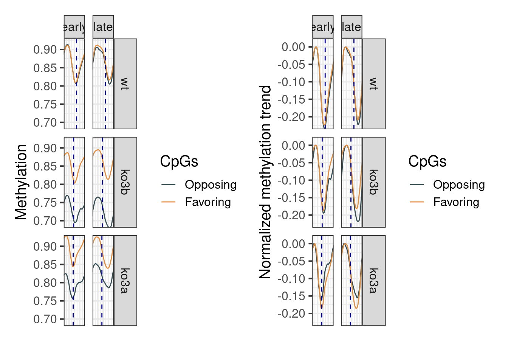
Using the ab-score
line_colors <- c("wt" = "darkblue", "ko3a" = "purple", "ko3b" = "orange")
df_ebs <- df_ord_ab_score_ebs %>% filter(day == "d5", cg_cont == '(0,0.02]') %>%
group_by(line) %>%
do({calc_cc_early_late_ab_diff(., low = "(-1.46,-0.734]", high = "(0.281,1.63]")}) %>%
ungroup() %>%
mutate(line = factor(line, levels = names(line_colors))) %>%
filter(!is.na(line))
df_ebs <- df_ebs %>%
pivot_longer(names_sep="_", names_prefix="avg_", cols=starts_with("avg"), names_to=c("tor", "ab_score", "dummy"), values_to="avg") %>%
mutate(ab_score = forcats::fct_recode(factor(ab_score), "A-phil" = "l", "B-phil" = "h")) %>%
mutate(line = factor(line, levels = names(line_colors))) %>%
filter(!is.na(line)) %>%
filter(cg_cont == "(0,0.02]") df_max_repli_ebs <- df_ebs %>%
group_by(line, tor) %>%
filter(ord2 <= 2, ord2 >= 1) %>%
summarise(s = ord2[which.max(early_late_cov)])
df_max_repli_ebs## # A tibble: 6 x 3
## # groups: line
## line tor s
## 1 wt early 1.604009
## 2 wt late 1.604009
## 3 ko3a early 1.441504
## 4 ko3a late 1.441504
## 5 ko3b early 1.463781
## 6 ko3b late 1.4637817.3.3 Figure 6D
p_ab_trend_ebs <- df_ebs %>%
ggplot(aes(x=ord2, y=avg, color=ab_score)) +
geom_smooth(method="loess", span=0.2, se=FALSE, size=0.5) +
coord_cartesian(xlim=c(1,2), expand=0) +
ggsci::scale_color_lancet(name = "CpGs") +
geom_vline(aes(xintercept = s), data = df_max_repli_ebs, color = "darkblue", linetype = "dashed") +
facet_grid(line~tor) +
xlab("") +
ylab("Methylation") +
theme(
axis.text.x = element_blank(),
axis.ticks.x = element_blank()
)
p_ab_trend_ebs## `geom_smooth()` using formula 'y ~ x'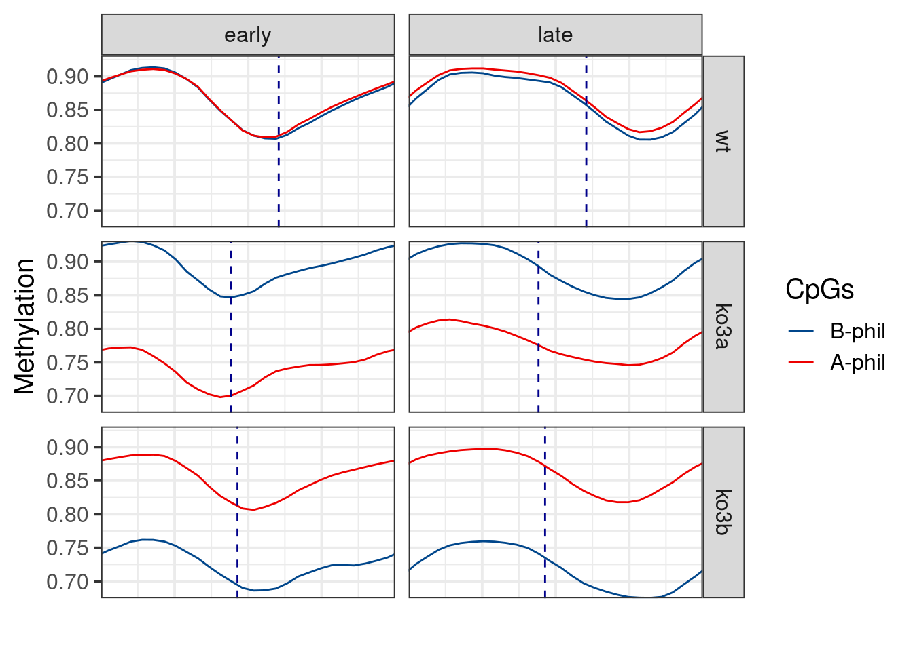
options(repr.plot.width = 5, repr.plot.height = 5)
line_colors <- c("wt" = "darkblue", "ko3a" = "purple", "ko3b" = "orange")
df_diff <- df_ebs %>% distinct(cell_id, cg_cont, day, line, ord2, tor, ab_score, avg) %>% spread(ab_score, avg) %>% mutate(diff = `B-phil` - `A-phil`) %>% filter(ord2 >= 1, ord2 <= 2)
p_diff <- df_diff %>%
mutate(line = factor(line, levels = names(line_colors))) %>%
unite("type", line, tor, sep=" ", remove=FALSE) %>%
group_by(type) %>%
mutate(mean_diff = mean(diff)) %>%
ungroup() %>%
mutate(type = gsub("ko3a", "3a-/-", type),
type = gsub("ko3b", "3b-/-", type)
) %>%
mutate(type = forcats::fct_reorder(type, -mean_diff)) %>%
ggplot(aes(x=type, y=diff, fill=line)) +
geom_boxplot(outlier.shape=NA) +
scale_fill_manual(name="", values=line_colors) +
ylab("B-phil - A-phil") +
xlab("") +
ggforce::geom_sina(size=0.01, alpha=0.05) +
vertical_labs()
p_diff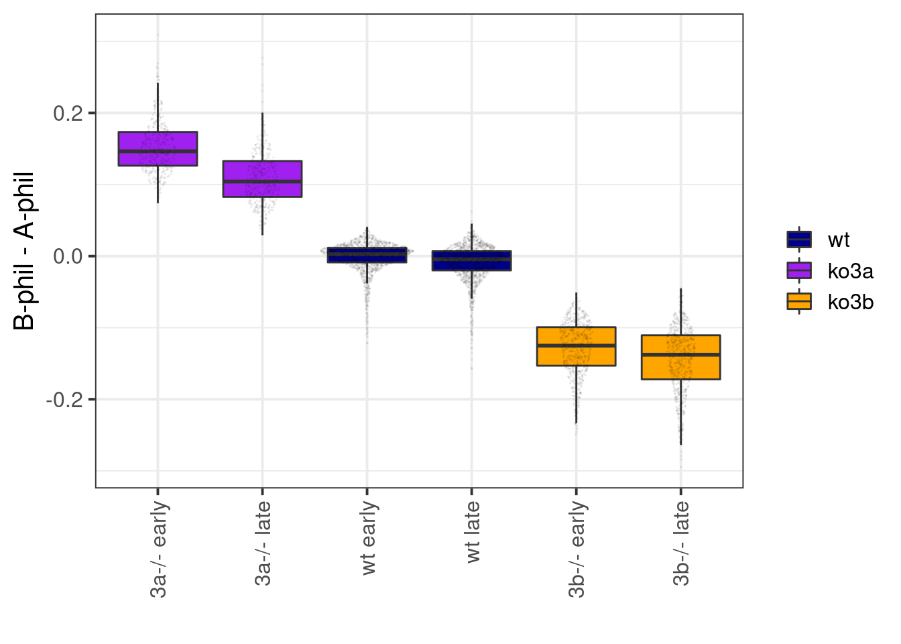
7.4 Plot other EB batches
df_cell_cycle_eb_other <- df_cell_cycle_annot %>%
filter(line != "mouse", day %in% c("d5", "d6"), (experiment %in% paste0("experiment", c(5,6,8))), avg_early >= 0.7, avg_late >= 0.7) %>%
select(cell_id, day, line, sort, experiment, avg_late, avg_early, early, late, early_late_cov, early_late_diff = meth_late_early_diff)l_ebs_other <- df_cell_cycle_eb_other %>% add_count(day, line) %>% filter(n >= 50) %>% as.data.frame() %>% plyr::dlply(c("day", "line"), function(x) calc_cell_cycle_ord(as_tibble(x)))## Joining, by = "cell_id"
## Joining, by = "cell_id"
## Joining, by = "cell_id"
## Joining, by = "cell_id"
## Joining, by = "cell_id"
## Joining, by = "cell_id"df_ord_ebs_other <- l_ebs_other %>%
map_dfr(~ .$df) %>%
as_tibble() %>%
unite("type", day:line, remove=FALSE) %>%
group_by(day, line) %>%
arrange(day, line, desc(early_late_cov) ) %>%
mutate(
new_ord = ord - ord[1] + 1,
new_ord = ifelse(new_ord >= 0, new_ord, max(new_ord) + abs(min(new_ord)) - abs(new_ord)),
ord1 = new_ord / max(new_ord)
) %>%
mutate(
trend = zoo::rollmean(early_late_cov[order(ord1)], 20, na.pad = TRUE),
i_mid = zoo::rollmean(ord1[order(ord1)],20)[which.min(trend)],
ord2 = i_mid - ord1,
ord2 = ord2 - floor(ord2)
) %>%
mutate(type = factor(type, levels = c("d6_wt", "d5_wt", "d5_ko3a", "d5_ko3b", "d6_ko3a", "d6_ko3b"))) %fcache_df% here("output/cell_cycle/ebs_other.tsv")df_ord_cgc_ebs_other <- tor_cgc_meth %>%
inner_join(df_ord_ebs_other %>% select(cell_id, day, line, type, ord2, early_late_cov)) ## Joining, by = "cell_id"df_ord_ab_score_ebs_other <- tor_ab_meth %>%
inner_join(df_ord_ebs_other %>% select(cell_id, day, line, type, ord2, early_late_cov))## Joining, by = "cell_id"7.4.1 Extended Data Figure 9H
options(repr.plot.width = 10, repr.plot.height = 7)
p_el_ebs_circle_wt_other <- df_ord_ebs_other %>%
filter(line == "wt") %>%
plot_cc_circle(point_size=0.4) +
facet_grid(type~.) +
scale_x_continuous(breaks=c(-0.1, 0.15)) +
coord_cartesian(ylim = c(-0.15, 1.9), xlim=c(-0.12, 0.14))
p_el_ebs_circle_ko_other <- df_ord_ebs_other %>%
filter(line != "wt") %>%
plot_cc_circle(point_size=0.4) +
facet_grid(type~.) +
scale_x_continuous(breaks=c(-0.1, 0.15)) +
coord_cartesian(ylim = c(-0.15, 1.9), xlim=c(-0.12, 0.14))
p_el_ebs_circle_wt_other + theme_bw() + theme(aspect.ratio=1) 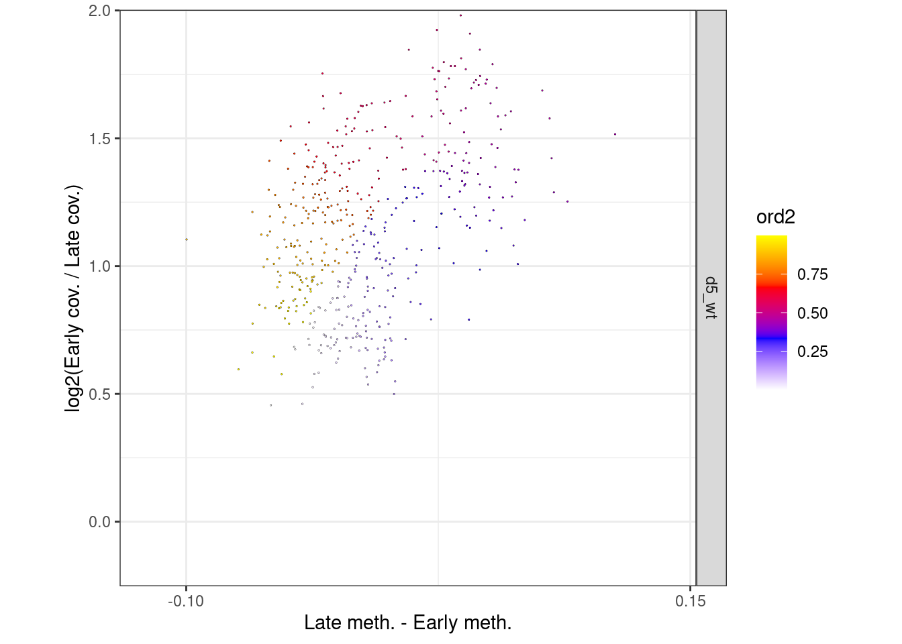